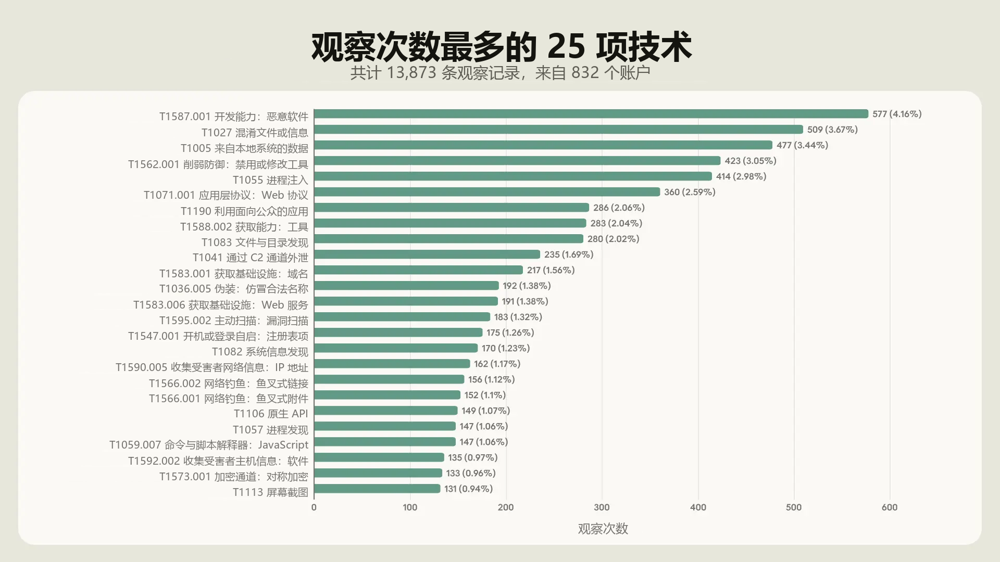
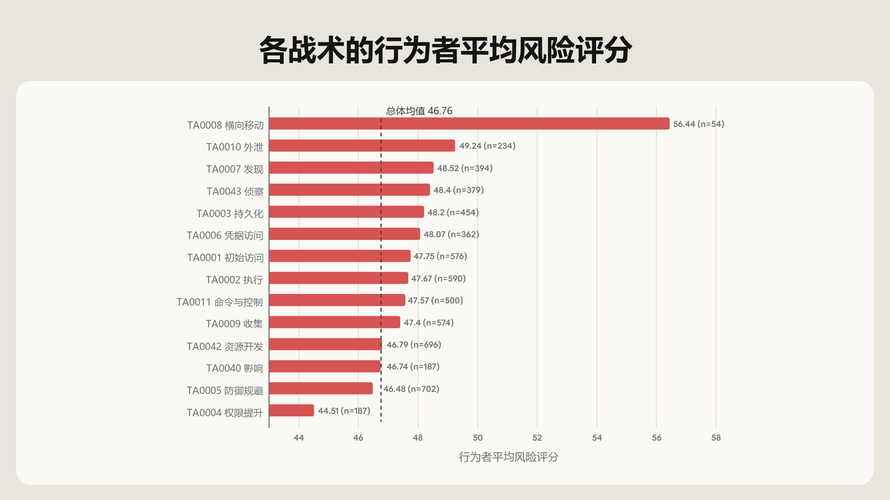

映射 AI 赋能的网络威胁：来自 LLM ATT&CK Navigator 的洞察
📖 中文摘要
专业术语注解
MITRE ATT&CK：描述网络攻击者战术与技术的公开知识库横向移动：攻击者进入内网后在多台主机之间扩散渗透的技术脚手架：围绕模型搭建的代码、架构与工具，使其能自主编排多步骤任务击杀链：网络攻击从侦察到造成影响的完整阶段序列凭据窃取：从系统中盗取登录口令与令牌的攻击手段风险评估模型：衡量威胁者的威胁、漏洞与影响三个维度的加性评分体系📄 中文全文
- 分类： Frontier Red Team（前沿红队）
- 来源： https://www.anthropic.com/research/attack-navigator
Frontier Red Team（前沿红队） 2026年6月3日 Kyla Guru、Alex Moix 和 Jacob Klein 过去一年，我们一直在调查威胁行为者如何将 AI 武器化以开展网络行动。今天，我们分享一项新分析，将真实世界的攻击映射到 MITRE ATT&CK® 框架——一个由网络攻击者使用的战术和技术组成的数据库。这样做揭示了一些挑战网络安全传统假设的模式——例如，威胁行为者构成的风险水平可以通过技术熟练度或技术广度等指标来评估。我们与 Verizon 合作，将部分结果纳入了_ 2026 年 Verizon 数据泄露调查报告（DBIR），并发布本报告，以提供对我们在 AI 赋能网络行动中看到的趋势的更长时间跨度分析。_[1]
在新标签页中打开交互式 Navigator。
关键发现
在这项研究中，我们分析了一年内（2025 年 3 月至 2026 年 3 月）与恶意网络活动相关的 832 个账户。Anthropic 因这些账户违反我们的使用政策而封禁了它们使用 Claude。本分析中的账户只是我们在此期间调查并封禁的账户的一个子集；我们选择它们，是因为我们有足够关于其恶意活动的细节，可以将它们的技术映射到 MITRE ATT&CK 框架上。 我们分析中的 832 个账户使用 AI 模型覆盖了框架中的全部 14 种战术和 482 个独特的子技术，从最初的情报侦察到最终的 impact（影响）[^2]。我们还开发了一个风险评分框架（本文后面将描述），以评估 AI 辅助在多大程度上帮助这些行为者规划其攻击。最引人注目的是，我们发现，被标记为中等风险或更高风险的行为者比例在一年内的上半年和下半年之间从 33% 跃升至 56%。这表明 AI 正在帮助攻击者以更大的便利开展越来越复杂的网络行动。 我们的分析有三个关键发现： 1. 使用 AI 进行网络行动的行为者数量正在增长，且他们的行动风险更高。 如上所述，中等或高风险行为者的比例在不到一年的时间内增加了约 1.7 倍，从我们研究窗口上半年的 33% 增加到下半年的 56%。这种增长集中在将 AI 用于一些最有害活动的行为者身上，包括横向移动（lateral movement）、凭据转储（credential dumping）和网页木马（web shells）——这些在我们的评分中具有最高的单行为者风险权重——而不是主导其余人群的商品化构建与混淆工作。传统上，只有技术最熟练的行为者才能跨越整个杀伤链（killchain），即网络攻击的连续阶段。但我们的分析发现，这种情况已不复存在。他们访问模型的平台（如 API 或像 Claude Code 这样的智能体编码平台）也与其行动的风险高低无关。真正_区分_最高风险行为者的，是他们向模型索要哪些技术。 2. 智能体脚手架（agentic scaffolding）将使网络攻击变得远比现在更自主。 随着 AI 赋能网络技术在这一人群中的普及，根据行为者要求模型做什么来区分其风险水平将变得更加困难。相反，区分因素将变成脚手架——使 AI 模型更强大的周围代码、架构和工具——即行为者在模型_周围_构建、以便自主链接攻击阶段的东西。这一点在我们 2025 年 11 月破坏的网络间谍活动中表现得尤为明显，该活动风险评分达到最高的 100 分，却只使用了与中等风险行为者相当数量的技术。那次攻击之所以独特，不是因为它使用的技术数量，而是因为攻击者如何使用 AI 智能体来编排这些技术。 3. MITRE ATT&CK 框架尚未涵盖使这些行为者如此危险的自主行动。 自主杀伤链编排、实时枢轴决策以及无人干预的 AI 指挥执行，在 ATT&CK 框架中还没有 ID 编号。我们的报告包含 13,873 条恶意活动观察，全部映射到框架中列出的类别——但区分最高风险行为者、并决定其行动速度和规模的行为，还没有这样的 ID。现代威胁情报所依赖的分类法需要发展以捕捉它们。
虽然 Claude Mythos Preview 展示了前沿 AI 网络能力的走向——模型能够以接近最熟练人类研究人员的水平发现和利用漏洞——本报告告诉我们威胁行为者今天如何滥用普遍可用的模型。它还可以作为威胁行为者近期可能如何滥用日益强大的模型的指南，让防御者有机会领先一步。 我们从这项分析和其他分析中学到的东西，直接塑造了我们构建 Claude 以防止此类滥用的方式。例如，我们更新了内置于 Claude 的分类器以检测最高风险行为者，并扩展了我们的探针（probe）检测，以覆盖本分析揭示的高风险行为指标。这些发现指向这样一个格局：低风险和高风险行为者之间的分界线不再是技术技能，而是编排能力；而我们所有人都依赖的防御、检测和共享框架，将需要与它们所描述的攻击一样快地演进。
关于数据集
本报告中的发现来自 832 个账户，这些账户因在 2025 年 3 月至 2026 年 3 月期间违反我们使用政策中与网络相关的部分而被 Anthropic 封禁。我们通过自动化保障措施和威胁情报团队的调查相结合的方式识别了这些账户。对于每个账户，我们都生成了一份所观察活动的摘要。然后我们提取这些摘要中描述的战术、技术和程序（TTPs），并将其映射到当时在线的 MITRE ATT&CK 框架版本（V18）。总的来说，我们观察到 13,873 个行动，涵盖 482 个独特技术和全部 14 种 ATT&CK 战术。 我们基于开发的一种名为 AI 风险赋能评分（AI Risk Enablement Score，ARiES）的新方法，给每个行为者打了一个从 0 到 100 的风险分（0 为最低风险，100 为最高风险），下文将对此进行描述。我们已对数据进行匿名化处理，因此在后续分析中无法识别行为者身份。
LLM ATT&CK Navigator 与 ARiES 风险评分
作为本分析的一部分，我们开发了 LLM ATT&CK Navigator：一个交互式框架，将观察到的 AI 赋能滥用模式映射到 MITRE ATT&CK 框架上，并为行为者分配 ARiES 风险评分。ARiES 是一个由三个信号构成的综合评分：行为者的威胁画像、模型对所请求危害的贡献，以及观察到或潜在的影响。它基于行为者在 Claude.ai、Claude Code 和我们的 API 上的活动计算得出，利用我们的安全分类器以及开源和内部威胁情报指标。分数越高，该 AI 赋能行为者的风险越高。 我们的框架从三个维度对单个技术和账户进行评分： * 威胁（0–35 分）： 评估行为者意图的清晰度、其技术熟练度、威胁情报信号，以及账户为逃避检测而采用的战术。技术熟练度由 Claude 根据行为者的提示和工具使用情况进行评分，衡量所需的专业知识、操作者技能、定制与商品化工具对比，以及能力深度。 * 漏洞（0–35 分）： 评估模型实现所请求危害的能力以及所用接口的风险画像。程序化接口（即 API）和像 Claude Code 这样的智能体编码工具因具有自动化行动的潜力而得分最高。 * 影响（0–30 分）： 通过我们的安全分类器分配的分数以及调查人员对可归因于 AI 参与行动的实际情况或潜在后果的评估，捕捉用户行为的现实世界影响。
这些组成部分共同产生 0 到 100 的总风险评分，使我们能够将威胁行为者和技术分为低、中、高和严重风险等级。
关于评分公式的说明
传统网络风险方程将风险表示为 威胁 × 漏洞 × 影响——一个乘法模型，反映假设的攻击是否可能成功。在这种模型下，如果任何一个因素为零，整体风险就会塌缩为零，因为缺少一个要素意味着攻击不会成功。 我们的模型刻意使用加法而非乘法，以便我们能够回答这个问题："哪些涉及 AI 的行为者和技术最值得防御者关注？"我们希望得到一个即使在一个维度缺失或不清晰时仍然有意义的分数，而乘法模型不允许这样做。考虑以下场景： 高能力和高后果，但没有明确意图。想象一个缺乏经验的用户，通过尝试智能体编码工具，无意中产生了可用的进攻性能力，比如可蠕虫化的利用程序（wormable exploit）。意图实际上为零，因此乘法评分会将其记为无风险。但实际上，模型仍然为潜在攻击提供了实质性提升，而且这种互动非常值得浮出水面，以便部署额外的保障措施。 明确意图和能力，但没有确定的受害者。现在考虑一个具有明确恶意意图的行为者，滥用 Claude 开发可用的恶意软件，但我们_还没有_证据表明其部署或下游影响。乘法模型将再次在"影响"维度上将分数归零，即使 AI 赋能信号——对手能够使用该模型成功开发有害软件这一事实——正是我们希望检测系统及早捕捉的东西。 相比之下，我们的加法模型独立地保留每个维度的信号，这意味着部分攻击赋能模式仍然可见。代价是，我们的分数不是对攻击是否会成功的预测；相反，它们是对一个涉及 AI 的滥用案例有多令人担忧的衡量。正如我们下面将要讨论的，我们还可以使用这些分数来查看 ATT&CK 框架中哪些特定部分最令人担忧，并将其与高风险行为者的活动位置相关联。
网络威胁行为者今天如何使用 AI
我们对 13,873 个观察技术的实证分析揭示了对手在整个攻击生命周期中如何使用 AI 的清晰模式，以及模型今天被用于的最常见技术。
AI 辅助能力开发
我们观察到的最常见技术族是 ATT&CK ID T1587（Develop Capabilities，开发能力），被我们分析中 832 个行为者中的 574 个使用，占 69%。这种行为的大部分表现为 T1587.001（Malware Development，恶意软件开发），被 560 个行为者使用。在实践中，我们观察到威胁行为者滥用模型来构建和完善自定义脚本以运行，编写带有详细实施指南的 DLL 注入代码，以及画布指纹规避和自动化账户管理。 接下来最流行的技术是 T1027（Obfuscated Files or Information，混淆文件或信息），被 64.7% 的威胁行为者使用；T1005（Data from Local System，来自本地系统的数据），被 55.9% 的威胁行为者使用；以及 T1562（Impair Defenses，削弱防御），被 54.9% 的威胁行为者使用。这些顶级技术共同表明，威胁行为者最常寻求 LLM 的帮助来构建交战前（pre-engagement）的进攻性工具、让这些工具更难被检测，以及从被攻陷的系统中收集数据。

另一方面，行为者一旦进入目标网络内部，就远不太可能使用 LLM 进行实时、自适应的决策。例如，832 个威胁行为者中只有 54 个（6.5%）使用模型进行横向移动，而使用模型进行 RDP、SSH 和 SMB 等远程服务的行为者不到 12 个。只有 22.5% 的行为者将 LLM 用于权限提升和影响阶段。 一些真实世界网络攻击中的常见技术族——如活动目录利用、Kerberos 票据攻击、云基础设施操纵（AWS、Azure、GCP）和容器逃逸——在数据集中的代表性明显较低。 顶级技术以及行为者使用它们的频率在我们研究的一年期间变化不大。在该时期的上半年和下半年，模型被用于的技术数量中位数都是 16。在下半年，我们观察到一个微妙的方向性转变，威胁行为者较少使用模型来构建独立的恶意软件或混淆脚本，而更多用于帮助网络攻击中的特定操作阶段，以及针对目标的发现和收集技术。具体来说，我们观察到 T1087（Account Discovery，账户发现）出现次数增加 8.9%，T1020（Automated Exfiltration，自动外泄）增加 6.2%，同时 T1587（Develop Capabilities，开发能力）减少 12%，T1566（Phishing，网络钓鱼）减少 8.6%。AI 辅助规避战术
防御规避（Defense evasion）是数据集中最大的单一战术类别，出现在我们研究的 84.4% 的行为者行为中。MITRE 在"防御规避"下定义了 64 种技术（涵盖其企业和移动专用框架）；我们在数据集中观察到其中的 32 种技术：25 种针对企业，7 种针对移动。 在该战术中观察到的顶级技术包括： * T1027（混淆文件或信息）。 我们样本中 64.7% 的威胁行为者使用 AI 实现 XOR/base64 编码、多态变体和反检测包装器等技术，以规避基于签名的检测。 * T1562（削弱防御）。 54.8% 的受研究威胁行为者使用 AI 绕过、禁用或篡改端点安全工具。 * T1055（进程注入）。 30.3% 的行为者使用 AI 编写可注入合法进程的恶意代码，如进程镂空（process hollowing）和 DLL 注入，以从可信进程内存执行载荷。
 较少使用的战术包括影响（2.8%）、外泄（2.8%）、权限提升（2.4%）和横向移动（0.7%）。这些合计仅占所有观察的 8.7%——比防御规避单独一项还少。这些行动都发生在攻击生命周期的较后阶段，这表明威胁行为者在攻击的早期阶段使用模型更多，而在后期阶段使用较少——也就是说，一旦他们渗透进网络并在实时环境中适应情况，就不再那么多使用。这种模式在我们研究的一年期间保持稳定。
较少使用的战术包括影响（2.8%）、外泄（2.8%）、权限提升（2.4%）和横向移动（0.7%）。这些合计仅占所有观察的 8.7%——比防御规避单独一项还少。这些行动都发生在攻击生命周期的较后阶段，这表明威胁行为者在攻击的早期阶段使用模型更多，而在后期阶段使用较少——也就是说，一旦他们渗透进网络并在实时环境中适应情况，就不再那么多使用。这种模式在我们研究的一年期间保持稳定。
高风险行为者及其战术
虽然像横向移动这样的战术在我们的数据集中远不普遍，但它们与最高的 ARiES 风险评分高度相关——这意味着最高风险的行为者也是最有可能使用模型进行网络攻击后期阶段的人。使用 AI 进行横向移动的行为者，其风险评分平均比不以这种方式使用 AI 工具的行为者高出 10.5 分。这表明，从使用 AI 准备网络攻击，到使用 AI 在实时网络操作中采取行动，是 AI 高赋能的关键标志。

总的来说，风险评分最高的行为者最重度地使用 AI 进行攻陷后的手动键盘（hands-on-keyboard）技术，如远程服务、凭据转储、网页木马部署以及内部网络和账户发现。横向移动是高风险行为者最强的标志：我们数据集中使用横向移动的 54 个行为者的平均风险评分为 56.4，比均值 46.8 高出近 10 分。没有任何其他技术具有接近这样的预测力。 在技术层面，最高风险行为者最常使用的技术是 T1021（Remote Services: SSH/SMB，远程服务：SSH/SMB）、T1078.003（Valid Accounts，有效账户）、T1003（OS Credential Dumping，操作系统凭据转储）、T1560（Archive Collected Data，归档收集的数据）和 T1505.003（Web Shell，网页木马）。这些技术在最高风险行为者中的出现频率比整体人群高出三到五倍。 与此同时，最普遍存在的战术（如防御规避和资源开发）和商品化技术（如撞库和鱼叉式网络钓鱼）被最高风险和最低风险行为者以大致相同的频率使用，鉴于这些战术非常常见，这不足为奇。综合来看，数据表明大多数威胁行为者使用 AI 在攻击的准备阶段构建恶意代码等制品，但最高风险的行为者既在攻击的准备阶段使用模型，也在攻陷网络内部的手动工作中使用模型。 我们还发现，威胁情报团队通常依赖来评估威胁行为者的属性——如评估的技术技能、接口选择或使用的技术数量——是 AI 模型可能为特定威胁行为者提供多少提升的弱预测指标。技术熟练度一旦从综合评分中移除以避免循环论证，与剩余风险成分的相关性仅为 r = 0.28。事实上，完全移除这一特征后，排名前六的行为者顺序完全不变（全部 832 个行为者的 Spearman ρ = 0.96）。高风险尾部不是技术熟练度成分的产物。 技术覆盖广度与风险评分之间的相关性也只是弱正相关（r = 0.27）。大多数行为者使用模型仅涉及零散的技术——事实上，我们数据集中的中等行为者部署了 16 种不同的 MITRE ATT&CK 技术——这种广度在五年前可能意味着一个资源充足、技术成熟的操作。 最后，接口选择讲述了一个类似的故事——本研究中的 80% 行为者滥用了 Claude Code，使智能体工具成为默认访问方式而非区分性方式，而仅限于对话界面、API 或智能体编码工具的行为者，其风险画像在统计上无法区分。
这告诉我们的是，从 AI 获得最大提升的恶意行为者不一定比其他行为者技术更熟练，也不一定使用编码工具或在杀伤链的多个步骤中使用 Claude；相反，他们只是将 Claude 用于更多动手操作的技术。
最后，接口选择讲述了一个类似的故事——本研究中的 80% 行为者滥用了 Claude Code，使智能体工具成为默认访问方式而非区分性方式，而仅限于对话界面、API 或智能体编码工具的行为者，其风险画像在统计上无法区分。
这告诉我们的是，从 AI 获得最大提升的恶意行为者不一定比其他行为者技术更熟练，也不一定使用编码工具或在杀伤链的多个步骤中使用 Claude；相反，他们只是将 Claude 用于更多动手操作的技术。
实时利用行为者正在增加
如上所述，在 AI 赋能上获得中等风险或更高评分的行为者比例，从研究第一个六个月期间的约 33.5% 增长到第二个六个月期间的约 56.1%——在不到一年的时间内增长了 1.7 倍。这两个时期之间的群体转移了约 22.6 个百分点：虽然大多数行为者在第一个六个月期间的风险评分较低，但第二个六个月期间大多数行为者的风险评分为中等。
虽然改进的威胁检测技术可能对这一增长有所贡献，但我们也看到越来越多的行为者要求模型做更多的操作性、网络内部的工作，这些工作以前只出现在小得多的高风险行为者群体中。在研究的第二个六个月期间，我们看到更专业的行为者使用模型构建利用工具、C2 基础设施和远程访问木马——但我们也看到更多低技能和中技能行为者不仅将模型用于准备性任务，还用于实时操作。我们从第一个六个月期间到第二个六个月期间观察到的 T1087（账户发现）增加 8.9% 和 T1020（自动外泄）增加 6.2% 与此一致：变得越来越频繁的技术，是那些暗示行为者已经访问了网络的技术。
这对防御者意味着什么：AI 赋能行为者的人群不仅在增长，而且正在向我们框架中最危险的活动漂移，而行为者自身无需变得更熟练。如果这种趋势持续下去，这些操作性技术将不再是区分因素，并将成为明天的基线——而我们将需要找到衡量最危险行为者的新方法。在下一节中，我们将讨论未来如何做到这一点。

AI 智能体时代的新颖性与熟练度
审视我们最高风险的威胁行为者还强调，仅根据攻击技术的数量、类型或广度来计算 AI 赋能网络行动的风险是不够的。我们还需要一种方法来理解威胁行为者能够构建的_脚手架_——将这些技术链接在一起用于实时操作——这使他们能够使用 AI 模型在无人干预的情况下自主执行网络攻击的大部分环节。 我们分析了编排我们于 2025 年 11 月报道的 AI 赋能网络间谍活动的威胁行为者的行为，其代号为 GTG-1002，我们看到该行为者达到了最高可能的 100 分风险评分，成功攻陷了多个国家的政府和关键基础设施目标，并开发了一种脚手架，将 Claude Code 用作自主操作者而非顾问。然而，他们整体的 MITRE 画像——13 种战术中的 30 种技术——与本数据集中的几十个_中等_风险行为者相当。中等行为者部署 16 种技术；几个低风险行为者也超过 30 种。换句话说，仅凭技术数量或战术类型无法解释是什么让 GTG-1002 成为我们迄今观察到的最高风险行为者。 _真正_解释该行为者高风险评分的，是他们使用的日益智能体的组件：他们如何编排和链接技术以实现其目标。GTG-1002 武器化了运行在 Kali Linux 机器上的 Claude Code，将开源渗透测试工具集成为 MCP（Model Context Protocol，模型上下文协议）服务器——有效地将 AI 变成了自主攻击平台，而非代码编写助手。AI 不仅仅是建议命令或生成攻击脚本；它执行它们，并自主推理攻击环境。他们"智能体性"的一些迹象通过我们追踪的技术类型得到了代理体现；GTG-1002 采用了诸如 T1021.004（Remote Services: SSH，远程服务：SSH）、T1210（Exploitation of Remote Services，远程服务利用）和 T1560（Archive Collected Data，归档收集的数据）等操作性技术。但主要的区分因素是： * 阶段内的自主执行： GTG-1002 部署了运行在 Kali 机器上的 Claude Code，自主编排几十个 MCP 工具操作——在侦察期间扫描和映射几十个面向互联网的服务，然后在进入网络后发现有内部管理门户、数据库、日志服务器和时间工作流系统。AI 不仅仅是建议命令；它执行它们，在不需要操作者输入的情况下做出接下来探测什么的战术决策。 * 实时利用和枢轴： 在 GTG-1002 的脚手架内运行，AI 利用了面向公众的 Web 服务器中的 SSRF 漏洞，将命令代理到内部云环境中，从内部基础设施收集 SSH 私钥，从云元数据服务和 AWS Secrets Manager 收集服务账户令牌，并使用这些收集的凭据在受害者的云环境中横向移动。这些是我们数据集中较为罕见的操作阶段（发现 → 凭据访问 → 横向移动）。 * 人类意图，AI 执行： GTG-1002 提供战略方向，而 AI 处理战术实施。AI 在侦察和内部发现期间自主运行，当遇到意外基础设施（如容器镜像签名工作流和服务账户身份）时调整其方法，并暂存和压缩数以万计的专有工作流记录和内部架构文档以备外泄。最终的数据提取——通过 curl MCP 工具调用下载到攻击者的机器——是由人类指挥的，这表明操作者保留了对重要决策的控制权，同时将操作工作委托给 AI。
GTG-1002 的活动是新颖的，因为它使用 AI 智能体自主地将网络攻击生命周期的许多阶段——侦察、利用、横向移动和外泄——链接成一个连贯的操作，并就做什么和收集什么数据做出实时决策。这是技术频率表无法捕捉的 AI 赋能提升维度，也是我们预计随着智能体工具成熟将变得最重要的维度。
我们如何使用 Navigator 来指导我们的保障措施
本报告中的发现塑造了我们检测、调查和破坏 AI 赋能网络滥用的方式。 首先，我们的风险评分表明，最高风险的行为者并不总是最喧闹或最多产的——他们通常在所采用技术的类型和数量上看起来很普通，而是通过他们如何编排 AI 来实施整个网络操作而脱颖而出。我们正在相应地更新检测系统，扩展我们的分类器和探针以捕捉与高 ARiES 评分相关的技术。我们还正在开发针对无法干净映射到 MITRE 的智能体滥用模式的检测信号，例如多步自主执行、AI 指挥的枢轴决策，以及通过 MCP 服务器和类似接口的工具增强操作。 其次，我们已在我们最有能力的模型上推出了实时网络保障措施，可在请求级别自动检测和阻止被禁止的活动（如勒索软件开发或大规模数据外泄）。我们现在还将更高风险的双用途活动——即网络攻击者和防御者都可能进行的活动——路由到我们的网络验证计划（Cyber Verification Program，CVP），该计划允许防御性从业者继续在工作中使用我们的模型。 第三，通过 Project Glasswing，我们在向更广泛的公众提供最有能力的模型之前研究其进攻性网络能力，以便我们在威胁行为者能够利用 AI 网络能力之前了解其走向，并在此类滥用发生之前设计保障措施。 最后，继我们与 Verizon 在 2026 年数据泄露调查报告上的合作之后，我们现在正与 MITRE 积极讨论 ATT&CK 框架如何演进，以捕捉我们在本分析中观察到的 AI 原生操作行为。我们还持续与政府和行业合作伙伴分享技术指标、威胁行为者使用的战术、技术和程序，以及调查发现。
MITRE ATT&CK 的新时代
现在最危险的行为者正在使用 AI 编排攻击，而不是仅仅构建支持此类攻击的工具，而威胁调查人员用来追踪威胁的框架尚未跟上。传统上依赖行为者技术熟练的框架，在低技能行为者也能构建、指挥和操作专家级工具时将会失效。 一年来映射这一活动以及与 Verizon 合作的一个明确教训是，我们必须扩展我们共享的威胁词汇。MITRE ATT&CK 捕捉了行为者执行的单个技术，但将最高风险行为者与其他行为者区分开来的行为——比如对整个杀伤链的智能体编排，或目标的自主选择——尚未被该分类法捕捉。 我们相信，下一步是向 ATT&CK 框架添加新的跨领域类别，帮助威胁调查人员识别将多种技术链接在一起的智能体性、自主性和决策性行为。这将为防御者提供一个与对手在野外使用 AI 工具的方式保持同步的词汇表。 与此同时，很明显，防御者将需要以与攻击者相同的熟练度和紧迫感使用 AI，在组织之间共享威胁情报，并缩短从识别软件漏洞到修补它的时间。作为一个行业，我们必须变得对不安全代码宽容度大大降低。过渡期将是艰难的。但是，如果行业、政府和公民社会以应有的紧迫感对待当前时刻，我们相信长期来看，有能力的 AI 系统将更有利于防御者而非攻击者：在新代码发布之前发现 bug，并使社会所依赖的系统更加安全。结果可能是防御更好的基础设施，以及欺诈和滥用实质性减少的数字环境。随着威胁格局的演变，我们将继续发布我们学到的内容。
脚注
[1] 对于 DBIR，我们提供了 11 个月的威胁行为者数据分析，并为本报告补足为 12 个月。 [2] 我们观察到来自 MITRE 企业版和移动版技术矩阵的子技术。企业技术占观察的 99%。
相关内容
深入了解 Claude 的数学能力
Claude 的一个未发布研究版本在与黎曼猜想相关的问题上取得了进展。它改进了黎曼 zeta 函数满足该猜想的零点比例的一个长期存在的下界，将其从 41.6% 提高到 67.2%。 阅读更多
用 Claude 发现密码学弱点
密码学算法。第一次攻击显著削弱了 HAWK——一种为"量子计算机能够破解现有标准"的未来世界而构建的数字签名方案。第二次攻击确定了攻击轮数缩减版 AES（使用最广泛的对称密码）的新方法。 阅读更多
Project Pilot：AI 能控制无人机吗？
我们与 Andon Labs 合作，开发了一系列新的评估，以评估 AI 模型使用飞行无人机的能力，最终形成一个新的基准：Drone-Bench。 阅读更多
订阅前沿红队通讯
获取我们最新红队研究和发现的更新。
▸ 英文原文（点击展开）
Mapping AI-enabled cyber threats: Insights from the LLM ATT&CK Navigator
- Category: Frontier Red Team
- Source: https://www.anthropic.com/research/attack-navigator
Frontier Red Team
Mapping AI-enabled cyber threats: Insights from the LLM ATT&CK Navigator
Jun 3, 2026 Kyla Guru, Alex Moix, and Jacob Klein We’ve spent the past year investigating how threat actors are weaponizing AI to conduct cyber operations. Today, we’re sharing a new analysis that maps these real-world attacks onto the MITRE ATT&CK® framework, a database of tactics and techniques used by cyberattackers. Doing so reveals patterns that challenge traditional assumptions about cybersecurity—for example, the level of risk a threat actor poses can be assessed via metrics like technical sophistication or breadth of techniques. We partnered with Verizon to include some of these results in the 2026 Verizon Data Breach Investigation Report (DBIR), and are publishing this report to offer a longer-form analysis of trends we are seeing in AI-enabled cyber operations.[1]
Open the interactive Navigator in a new tab.
Key findings
For this study, we analyzed 832 accounts associated with malicious cyber activity over the course of one year, from March 2025 to March 2026. Anthropic banned these accounts from using Claude for violating our Usage Policy. The accounts in this analysis are just a subset of those we investigated and banned during this time period; we selected them because we had enough detail about their malicious activities to map their techniques onto the MITRE ATT&CK framework. The 832 accounts in our analysis used AI models for all 14 tactics and 482 unique sub-techniques across the framework, from initial reconnaissance through final impact.[2] We also developed a risk-scoring framework (described later in this post) to assess how much AI assistance helped these actors plan their attacks. Most strikingly, we found that the percentage of actors labeled as being medium risk or higher jumped from 33% to 56% between the first and second halves of the year. This suggests that AI is helping attackers conduct increasingly sophisticated cyber operations with greater ease. There are three key findings from our analysis: 1. The number of actors using AI for cyber operations is growing, and their actions carry higher risk. As mentioned above, the percentage of medium- or high-risk actors increased by a factor of about 1.7 in under a year, from 33% in the first half of our study window to 56% in the second. That growth is concentrated in actors using AI for some of the most harmful activities, including lateral movement, credential dumping, and web shells — that carry the highest per-actor risk weight in our scoring, rather than the commodity build-and-obfuscate work that dominates the rest of the population. Traditionally, only the most technically sophisticated actors could operate across the entire killchain, or the sequential stages of a cyberattack. But our analysis found that this is no longer the case. The platform through which they access the model (such as an API or an agentic coding platform like Claude Code) also has no bearing on how high-risk their actions are. What does distinguish the highest-risk actors is which techniques they’re asking the model for. 2. Agentic scaffolding will make it possible for cyberattacks to be far more autonomous. As AI-enabled cyber techniques become more common among this population, it will become harder to differentiate an actor’s risk level based on what they are asking a model to do. Instead, the differentiator will become the scaffolding—the surrounding code, architecture, and tooling that makes AI models more capable—that actors build around the model so they can chain together attack stages autonomously. This was starkly apparent in the cyber espionage campaign we disrupted in November 2025, which had a maximum risk score of 100 yet only used a number of techniques comparable to medium-risk actors. That attack was distinct not because of the number of techniques it employed but because of how the attackers used an AI agent to orchestrate them. 3. The MITRE ATT &CK framework doesn’t yet cover the autonomous actions that make these actors so dangerous. Autonomous killchain orchestration, real-time pivot decisions, and AI-directed execution with no human intervention don’t yet have ID numbers in the ATT&CK framework. Our report included 13,873 observations of malicious activity, all of which mapped to categories laid out in the framework—but the behaviors that distinguish the highest-risk actors, and determine the speed and scale of their operations, don’t yet have such IDs. The taxonomy that modern threat intelligence relies on needs to grow to capture them.
While Claude Mythos Preview demonstrates where frontier AI cyber capabilities are heading—models able to find and exploit vulnerabilities at a level approaching the most skilled human researchers—this report tells us how threat actors are misusing generally available models today. It also serves as a guide to how threat actors are likely to misuse increasingly capable models in the near future, giving defenders a chance to get ahead of them. What we learned from this and other analyses directly shapes how we build Claude to prevent such misuse. For example, we’ve updated the classifiers built into Claude to detect the highest-risk actors, and have expanded our probe detections to cover high-risk behavioral indicators revealed by this analysis. These findings point to a landscape where the dividing line between low and high-risk actors is no longer technical skill but orchestration, and where defenses, detections, and the shared frameworks we all rely on will need to evolve as fast as the attacks they describe.
About the dataset
The findings in this report are drawn from 832 accounts that Anthropic banned for violating cyber-related parts of our Usage Policy between March 2025 and March 2026. We identified these accounts through a combination of automated safeguards and investigations by our Threat Intelligence team. For each account, we produced a summary of the observed activity. We then extracted the tactics, techniques, and procedures (or TTPs) described in those summaries, and mapped them to the version of the MITRE ATT&CK framework that was live at that time (V18). In all, we observed 13,873 actions across 482 unique techniques and all 14 ATT&CK tactics. We gave each actor a risk score from 0 to 100 (with 0 being the lowest risk and 100 being the highest) based on a new methodology we’ve developed called the AI Risk Enablement Score (ARiES), described below. We’ve anonymized the data so that actors cannot be identified in the analysis that follows.
The LLM ATT&CK Navigator and ARiES risk score
As part of this analysis, we developed the LLM ATT&CK Navigator: an interactive framework that maps observed AI-enabled misuse patterns onto the MITRE ATT&CK framework and assigns an ARiES risk score to the actor. ARiES is a composite score built from three signals: the actor’s threat profile, the model’s contribution to the requested harm, and the observed or potential impact. It is calculated based on the actor's activity across Claude.ai, Claude Code, and our API, drawing on our safety classifiers alongside open-source and internal threat-intelligence indicators. The higher the score, the higher-risk the AI enabled actor is. Our framework scores both individual techniques and accounts across three dimensions: * Threat (0–35 points): Evaluates the clarity of the actor’s intent, their technical sophistication, threat intelligence signals, and tactics employed by the account to evade detection. Technical sophistication is graded by Claude on the basis of the actor's prompts and tool usage, measuring expertise required, operator skill, bespoke-versus-commodity tooling, and capability depth. * Vulnerability (0–35 points): Assesses the model’s capacity to enable the requested harm and the risk profile of the interface used. Programmatic interfaces (i.e. API) and agentic coding tools like Claude Code score highest due to their potential to automate actions. * Impact (0–30 points): Captures the real-world effects of the user’s behavior through scores assigned by our safety classifiers and investigators’ assessment of actual or potential consequences attributable to AI’s involvement in the operation.
Together, these components produce a total risk score from 0 to 100, allowing us to categorize threat actors and techniques into low, medium, high, and critical risk tiers.
A note on the scoring formula
Traditional cyber risk equations express risk as Threat × Vulnerability × Impact—a multiplicative model that reflects whether a hypothetical attack is likely to succeed. Under this model, if any one factor is zero, the overall risk collapses to zero, because a missing ingredient means the attack will not succeed. Our model deliberately uses addition rather than multiplication so that we can answer the question, “Which AI-involved actors and techniques warrant the most attention from defenders?” We wanted a score that would remain meaningful even when one dimension is absent or unclear, which the multiplication model does not allow. Consider the following scenarios: High capability and consequence, but no clear intent. Imagine an inexperienced user who, through experimentation with an agentic coding tool, inadvertently produces functional offensive capabilities, like a wormable exploit. Intent is effectively zero, so a multiplicative score would register this as no risk. But in reality, the model has still provided substantial uplift to a potential attack, and the interaction is very much worth surfacing so that additional safeguards can be deployed. Clear intent and capability but no identified victim. Now consider an actor with explicit malicious intent who misuses Claude to develop working malware, but we have no evidence of deployment or downstream impact—yet. The multiplicative model would, again, zero out the score on the “impact” dimension, even though the AI enablement signal—the fact that an adversary was able to successfully develop harmful software using the model—is exactly what we want our detection systems to catch early. By contrast, our additive model preserves signals from each dimension independently, meaning partial attack-enablement patterns remain visible. The tradeoff is that our scores are not predictions of whether an attack will be successful; rather, they are measures of how concerning an AI-involved misuse case is. As we will discuss below, we can also use these scores to see what specific parts of the ATT&CK framework are most concerning, and correlate these with where high-risk actors are operating.
How cyber threat actors are using AI today
Our empirical analysis of 13,873 observed techniques reveals clear patterns in how adversaries are using AI across the attack lifecycle, and the most common techniques that models are being used for today.
AI-assisted capability development
The most common technique family we observed was ATT&CK ID T1587 (Develop Capabilities), used by 574 of the 832 actors in our analysis, or 69%. The majority of this behavior manifests as T1587.001 (Malware Development), used by 560 actors. In practice, we observe threat actors misusing models to build and refine custom scripts to run, write DLL injection code with detailed guidance on how to implement it, as well as canvas fingerprinting evasion and automated account management.
The next most prevalent techniques are T1027 (Obfuscated Files or Information), employed by 64.7% of threat actors; T1005 (Data from Local System), employed by 55.9% of threat actors; and T1562 (Impair Defenses), employed by 54.9% of threat actors. Together, these top techniques show that threat actors most commonly seek LLM’s help to build pre-engagement offensive tooling, make those tools harder to detect, and harvest data from compromised systems.
On the other hand, actors are much less likely to use LLMs for real-time, adaptive decision-making once they’ve gotten inside a target network. For example, only 54 of 832 threat actors (6.5%) use models for lateral movement, and less than 12 actors use models for remote services like RDP, SSH, and SMB. Only 22.5% of actors use LLMs for privilege escalation and impact stages.
Some technique families that are staples of real-world cyberattacks—such as active directory exploitation, Kerberos ticket attacks, cloud infrastructure manipulation (AWS, Azure, GCP), and container escape —have notably lower representation within the dataset.
The top techniques and the frequency with which actors used them didn’t change much over the one-year period we studied. For both the first and second halves of the period, the median number of techniques the model is used for is 16. In the second half of the year, we observe a subtle directional shift, with threat actors using models less to build standalone malware or obfuscation scripts and more to help with specific operational phases in a cyberattack, and for on-target discovery and collection techniques. Specifically, we observe an 8.9% increase in T1087 (Account Discovery) occurrences, as well as a 6.2% increase in T1020 (Automated Exfiltration), alongside a 12% decrease in T1587 (Develop Capabilities) and a 8.6% decrease in T1566 (Phishing).
AI-assisted evasion tactics
Defense evasion is the single largest tactic category in the dataset, present in the behavior of 84.4% of the actors we studied. MITRE defines 64 techniques under “defense evasion” (across its Enterprise- and Mobile-specific frameworks); we observe 32 of these techniques in our dataset: 25 for enterprise and 7 for mobile. The top techniques observed within this tactic include: * T1027 (Obfuscated Files or Information). 64.7% of threat actors in our sample used AI to implement techniques like XOR/base64 encoding, polymorphic variants, and anti-detection wrappers to evade signature-based detection. * T1562 (Impair Defenses). 54.8% of the threat actors studied used AI to bypass, disable, or tamper endpoint security tools. * T1055 (Process Injection). 30.3% of actors used AI to write malicious code that could be injected into legitimate processes, such as process hollowing and DLL injection, to execute payloads from trusted process memory.
Less frequently used tactics include impact (2.8%), exfiltration (2.8%), privilege escalation (2.4%), and lateral movement (0.7%). Together, these account for just 8.7% of all observations—less than defense evasion alone. These actions all occur later in the attack life cycle, suggesting that threat actors are using models more in the early stages of an attack but less in the later stages—that is, once they have infiltrated a network and are adapting to conditions in a live environment. This pattern remained stable over the one-year period we studied.
High-risk actors and their tactics
While tactics such as lateral movement are much less prevalent in our dataset, they are highly correlated with the highest ARiES risk scores—meaning that the highest-risk actors are also the ones most likely to use models for the later stages of a cyberattack. Actors who use AI to perform lateral movement have risk scores that are, on average, 10.5 points higher than actors who do not use AI tools in this way. This suggests that going from using AI to prepare for a cyberattack to using it to take actions in live network operations is a key marker of high AI enablement.
Overall, the actors with the highest risk scores used AI most heavily for post-compromise, hands-on-keyboard techniques, such as remote services, credential dumping, web shell deployment, and internal network and account discovery. Lateral movement was the strongest marker of a high-risk actor: the 54 actors in our dataset who used lateral movement had an average risk score of 56.4, nearly 10 points above the mean of 46.8. No other technique came close to having such predictive power.
At the technique level, the techniques that were most commonly used by the highest-risk actors were T1021 (Remote Services: SSH/SMB), T1078.003 (Valid Accounts), T1003 (OS Credential Dumping), T1560 (Archive Collected Data), and T1505.003 (Web Shell). These were all three to five times more common among the highest-risk actors compared to the overall population.
Meanwhile, the most ubiquitous tactics (such as defense evasion and resource development) and commodity techniques (such as credential stuffing and spearphishing) were used at roughly the same frequency by both the highest- and lowest-risk actors, which is unsurprising given that these tactics are so common. Taken together, the data suggests that the majority of threat actors are using AI to build artifacts like malicious code in the preparatory stages of an attack, but the highest-risk actors are using models both in the preparatory stages of an attack as well during the hands-on work inside a compromised network.
We also found that the attributes that threat-intelligence teams typically lean on to assess threat actors—such as their assessed technical skill, choice of interface, or number of techniques used—are weak predictors of how much uplift an AI model might provide to a given threat actor. Technical sophistication, once removed from the composite score to avoid circularity, correlates with the remaining risk components at only r = 0.28. In fact, removing this characteristic entirely leaves the top six actors in identical rank order (Spearman ρ = 0.96 across all 832). The high-risk tail is not an artifact of the Technical Sophistication component.
The correlation between breadth of technique coverage and risk score is also only weakly positive (r = 0.27). Most actors are using the models for a smattering of techniquesin fact, the median actor in our dataset deployed 16 distinct MITRE ATT&CK techniques—a breadth that, five years ago, may have signaled a well-resourced, technically mature operation.
Lastly, interface choice tells a similar story — 80% of the actors in this study misused Claude Code, making agentic tooling the default mode of access rather than a distinguishing one, and actors restricted to the conversational interface, the API, or agentic coding tools converge on statistically indistinguishable risk profiles.
What this tells us is that the malicious actors who get the most uplift from AI are not necessarily more technically sophisticated than other actors, nor do they necessarily use coding tools or use Claude across multiple steps of the killchain; rather, they simply used Claude for more hands-on techniques.
Live exploitation actors on the rise
As we discussed above, the share of actors scoring medium-risk or higher on AI enablement grew from roughly 33.5% in the first six-month period of the study to roughly 56.1% in the second—a 1.7x increase in under a year. The cohort shifted between these two periods by about 22.6 percentage points: while the majority of actors had a low risk score in the first six-month period, the majority had a medium risk score in the second six-month period.
While improved threat detection techniques may have contributed to this increase, we also see an increasing number of actors asking the model for more operational, in-network work that used to appear only in a much smaller cohort of high-risk actors. In the second six-month period of the study, we saw more specialized actors using models to build exploitation tooling, C2 infrastructure, and remote access trojans —but we also saw more low- and mid-skill actors using models not just for preparatory tasks but for live operations. The 8.9% increase in T1087 (Account Discovery) and 6.2% increase in T1020 (Automated Exfiltration) techniques we observed from the first six-month period to the second are consistent with this: the techniques that are becoming more frequent are the ones that imply the actor has already accessed the network.
What this means for defenders: the population of AI-enabled actors is not only growing but also drifting towards the riskiest activities in our framework, without requiring the actors themselves to become any more skilled. If this trend continues, these operational techniques won’t be a differentiating factor anymore and will become the baseline tomorrow — and we’ll need to find a new way to measure the riskiest actors. In the next section, we’ll discuss how we might be able to do this going forward.
Novelty and sophistication in the age of AI agents
Looking at our highest-risk threat actors also underscores that calculating the risk of AI-enabled cyber operations based on number, type, or breadth of attack techniques is insufficient. We also need a way to understand the scaffolding threat actors are able to build to chain these techniques together to use in live operations, which allows them to use AI models to autonomously execute large swaths of a cyberattack without human intervention. We analyzed the behavior of the threat actor who orchestrated the AI-enabled cyber espionage campaign we reported on in November 2025, labeled GTG-1002, we see that this actor achieved the maximum possible risk score of 100, successfully compromised government and critical infrastructure targets across multiple countries, and developed a scaffolding to use Claude Code not as an advisor, but as an autonomous operator. Yet their overall MITRE profile—30 techniques across 13 tactics—is comparable to dozens of medium -risk actors in this dataset. The median actor deploys 16 techniques; several low-risk actors also exceed 30. In other words, technique count or tactic type alone could not explain what made GTG-1002 the most high-risk actor we have observed thus far. What does explain this actor’s high risk score is the increasingly agentic components they used: how they were able to orchestrate and chain together techniques to take action on their objectives. GTG-1002 weaponized Claude Code running on a Kali Linux machine, integrating open-source penetration testing tools as MCP (Model Context Protocol) servers—effectively turning the AI into an autonomous attack platform rather than a code-writing assistant. The AI didn't just suggest commands or generate attack scripts; it executed them and reasoned about attack environments autonomously. Some indications of their ‘agentic-ness’ show up proxied through the types of techniques we track; GTG-1002 employed operational techniques such as T1021.004 (Remote Services: SSH), T1210 (Exploitation of Remote Services), and T1560 (Archive Collected Data). But the main differentiators were: * Autonomous execution within stages : GTG-1002 deployed Claude Code running on a Kali machine to orchestrate dozens of MCP tool operations autonomously — scanning and mapping dozens of internet-facing services during reconnaissance, then discovering internal admin portals, databases, logging servers, and temporal workflow systems once inside the network. The AI didn't just suggest commands; it executed them, making tactical decisions about what to probe next without waiting for operator input. * Live exploitation and pivoting : Operating within GTG-1002’s scaffolding, the AI exploited an SSRF vulnerability in a public-facing web server to proxy commands into the internal cloud environment, harvested SSH private keys from internal infrastructure and service account tokens from cloud metadata services and AWS Secrets Manager, and used those harvested credentials to move laterally across the victim's cloud environment. These are the operational phases (discovery → credential access → lateral movement) that were more rare in our dataset. * Human intent, AI execution: GTG-1002 provided strategic direction while the AI handled tactical implementation. The AI operated autonomously during reconnaissance and internal discovery, adapted its approach when it encountered unanticipated infrastructure like container image signing workflows and service account identities, and staged and compressed tens of thousands of proprietary workflow records and internal architecture documentation for exfiltration. The final data extraction — downloading to the attacker's machine via curl MCP tool calls — was human-directed, suggesting the operator retained control over the consequential decisions while delegating the operational work to the AI.
GTG-1002’s activity was novel for using an AI agent to autonomously chain together many stages of the cyberattack lifecycle—reconnaissance, exploitation, lateral movement, and exfiltration—into a coherent operation, making real-time decisions about what to do and what data to collect. This is the dimension of AI-enabled uplift that a technique-frequency table cannot capture, and it is the dimension we expect to matter most as agentic tooling matures.
How we are using the Navigator to inform our safeguards
The findings in this report have shaped how we detect, investigate, and disrupt AI-enabled cyber misuse. First, our risk scores show that the highest-risk actors are not always the loudest or the most prolific—they often appear ordinary in terms of the type and volume of techniques they employ, and instead are distinguished by how they orchestrate their AI to carry out an entire cyber operation. We are updating our detection systems accordingly, expanding our classifiers and probes to catch techniques that correlate with high ARiES scores. We’re also developing detection signals for agentic misuse patterns that don’t map cleanly to MITRE, such as multistep autonomous execution, AI-directed pivot decisions, and tool-augmented operations through MCP servers and similar interfaces. Second, we have rolled out real-time cyber safeguards on our most capable models that automatically detect and block prohibited activity (such as ransomware development or mass data exfiltration) at the request level. We are also now routing higher-risk dual-use activities—those that both cyberattackers and defenders may undertake—through our Cyber Verification Program (CVP), which allows defensive practitioners to continue using our models in their work. Third, through Project Glasswing, we are studying the offensive cyber capabilities of our most capable model before making it available to the wider public, so that we understand where AI cyber capabilities are heading before threat actors can make use of them, and can design safeguards before such misuse happens. Finally, following on from our collaboration with Verizon on the 2026 Data Breach Investigation Report, we are now in active conversations with MITRE about how the ATT&CK framework can evolve to capture the AI-native operational behaviors we observed in this analysis. We also continue to share technical indicators; tactics, techniques, and procedures used by threat actors; and investigative findings with our partners in government and industry on an ongoing basis.
A new era for MITRE ATT&CK
The most dangerous actors are now using AI to orchestrate attacks rather than simply build tools that enable such attacks, and the framework threat investigators use to track threats has yet to catch up. Traditional frameworks that bank on actors being technically sophisticated will fail when low-skill actors can build, command, and operate expert-level harnesses. One clear lesson from a year of mapping this activity, as well as our work with Verizon, is that we must expand our shared threat vocabulary. The MITRE ATT&CK captures the individual techniques actors execute, but the behaviors that distinguish the highest-risk actors from others—things like agentic orchestration of an entire killchain, or the autonomous selection of targets—are not yet captured by this taxonomy. We believe the next step is to add new cross-cutting categories to the ATT&CK framework that help threat investigators identify the agentic, autonomous, and decision-making behaviors that chain multiple techniques together. This will give defenders a vocabulary that keeps pace with how adversaries are using AI tools in the wild. At the same time, it is clear that defenders will need to use AI with the same sophistication and urgency as attackers, share threat intelligence between organizations, and shorten the time from identifying a software vulnerability to patching it. As an industry, we must become much less tolerant of insecure code. The transitional period will be difficult. But, if industry, government, and civil society treat the current moment with the urgency it warrants, we believe capable AI systems will benefit defenders more than attackers in the long run: finding bugs before new code ships, and making the systems societies depend on more secure. The result could be better-defended infrastructure, and a digital environment with materially less fraud and abuse. We will continue to publish what we learn as the threat landscape evolves.
Footnotes
[1] For the DBIR, we provided analysis of 11 months of threat actor data, and rounded this out to 12 months for this report. [2] We observe sub-techniques from both the Enterprise and the Mobile technique matrices from MITRE. Enterprise techniques account for 99% of observations.
Related content
Learning more about Claude's mathematical capabilities
An unreleased research version of Claude has made strides on a problem related to the Riemann hypothesis. It improved a longstanding lower bound for the fraction of zeros of the Riemann zeta function that satisfy the hypothesis, increasing it from 41.6% to 67.2%. Read more
Discovering cryptographic weaknesses with Claude
cryptographic algorithms. The first attack significantly weakens HAWK, a digital signature scheme that was built for a future world where quantum computers are able to break existing standards. The second identifies a new way to attack round-reduced AES, the most widely used symmetric cipher. Read more
Project Pilot: Can AI control a drone?
Working with Andon Labs, we’ve developed a new series of evaluations that assess AI models’ ability to use a flying drone, culminating in a new benchmark: Drone-Bench. Read more
Subscribe to the Frontier Red Team newsletter
Get updates on our latest red-teaming research and findings.